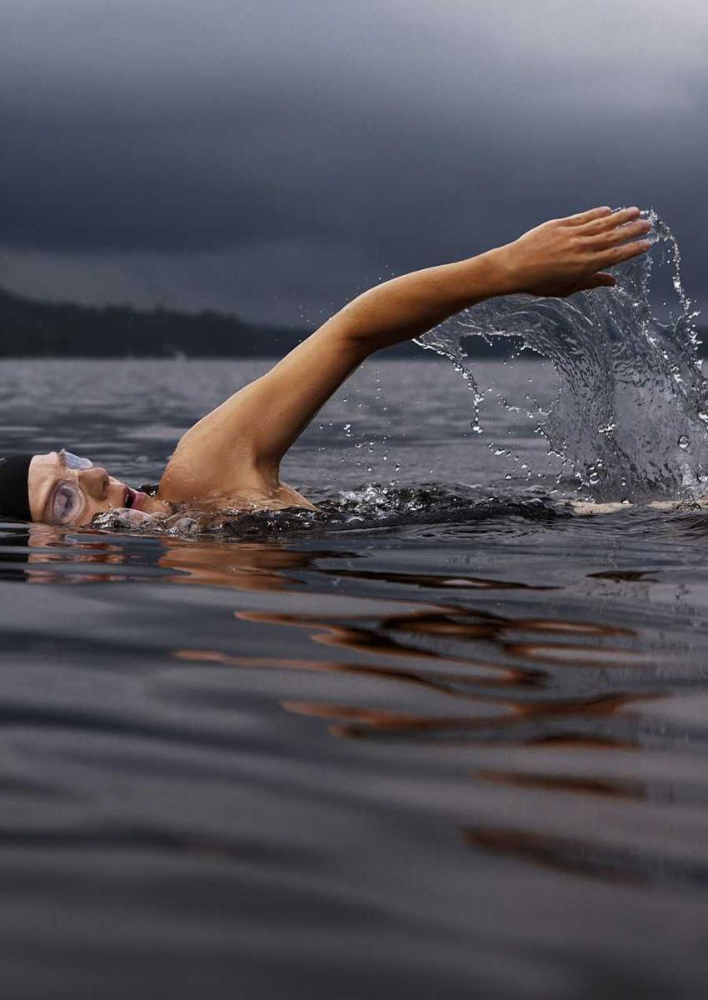
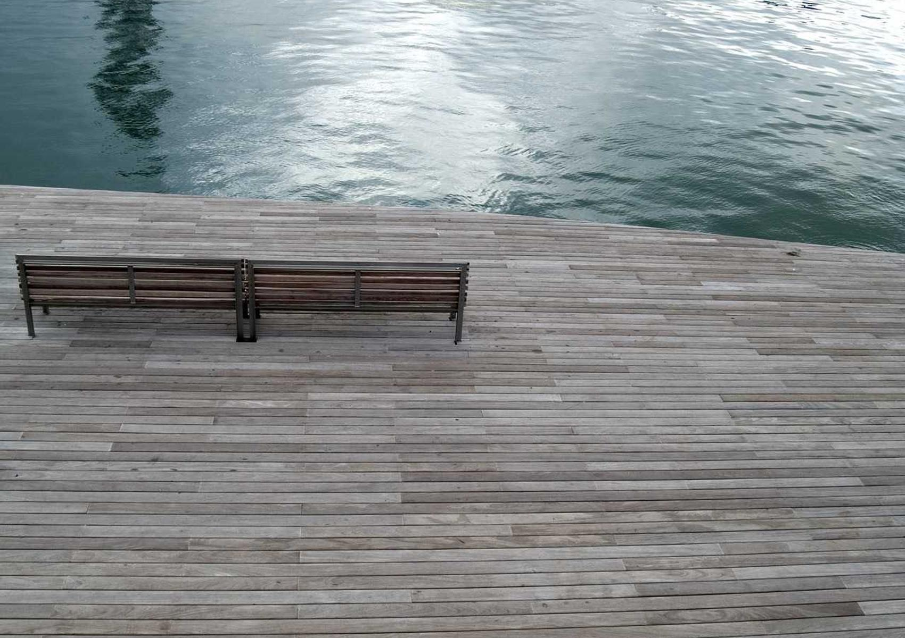
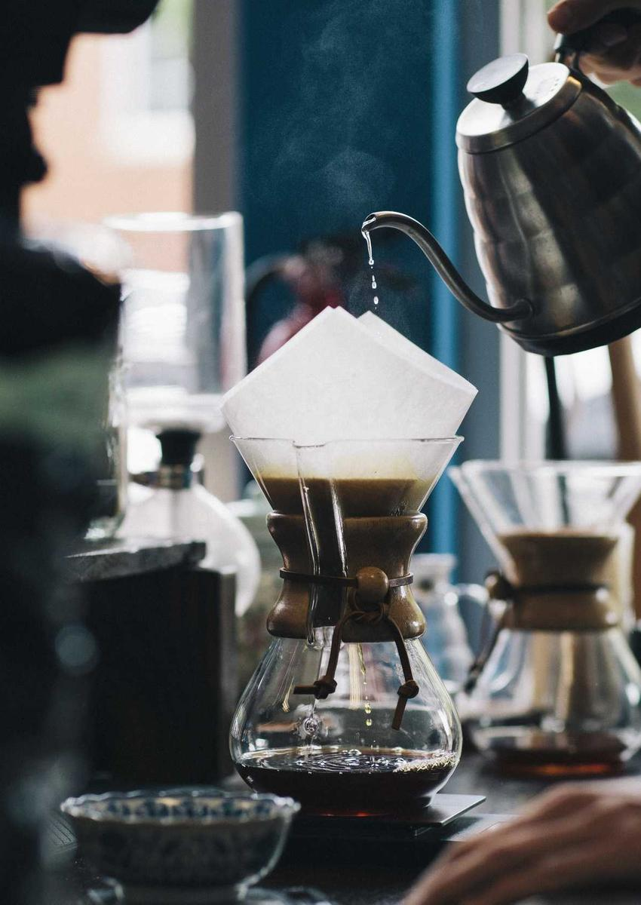
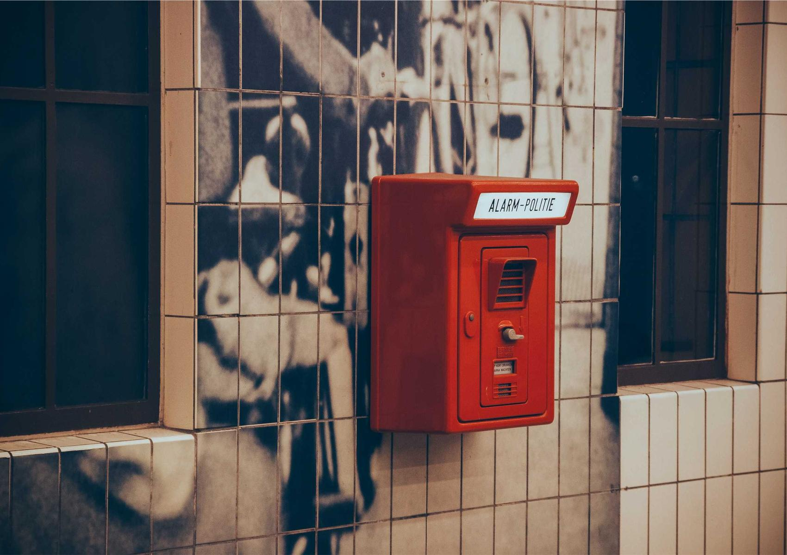
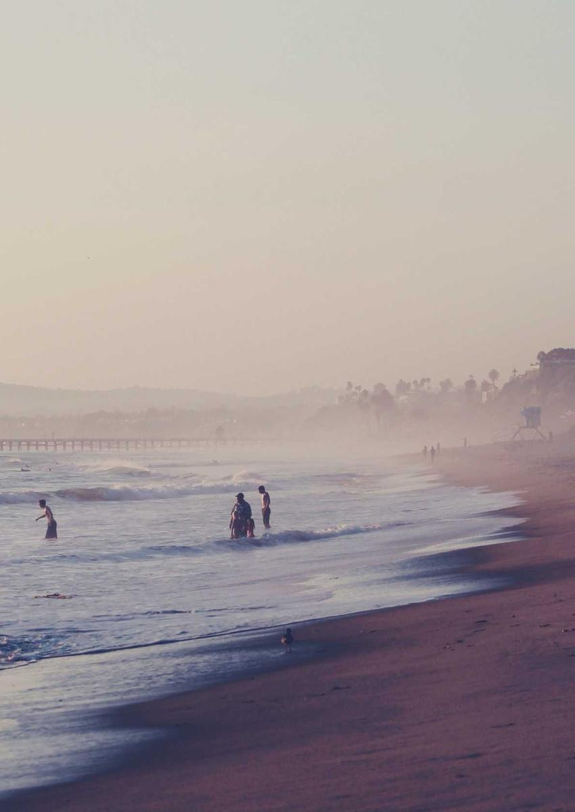
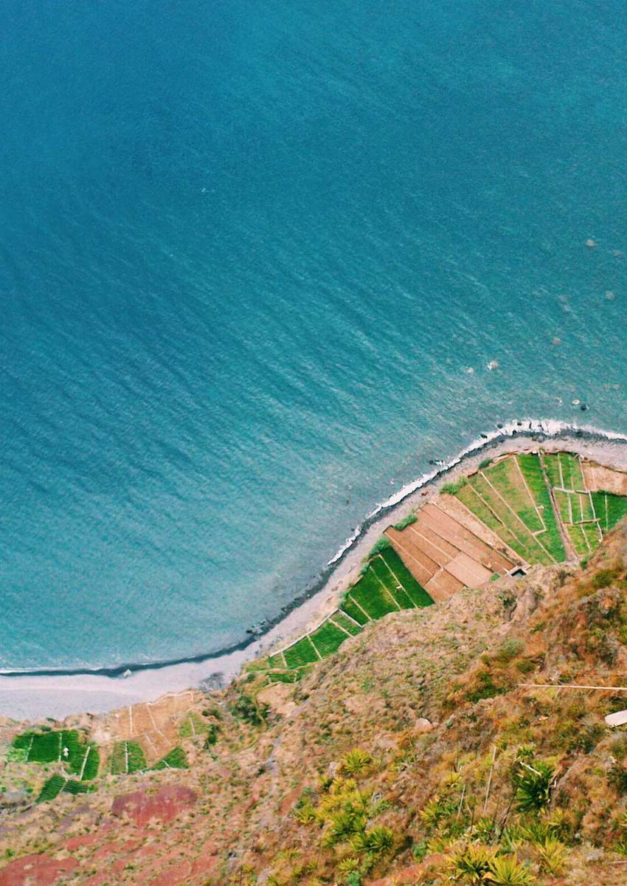
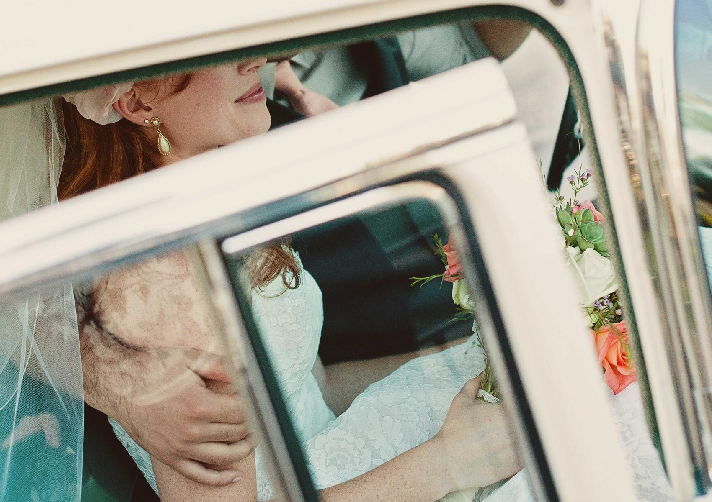
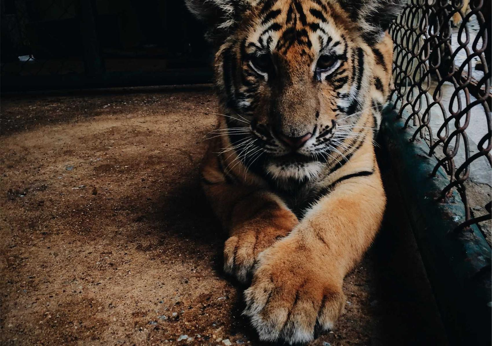
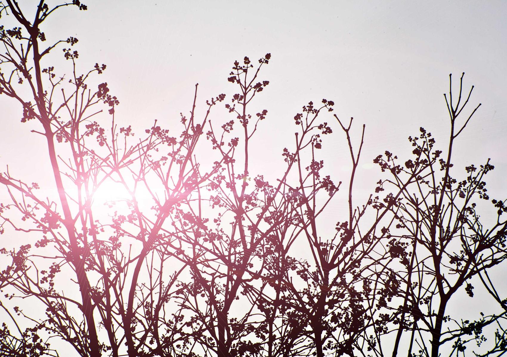

Magazine D
ISSUE NO.1
DO AH RA &
JO DONG IN
도아라 & 조동인
| language | KOREAN |
| format | mobile web · print 170 × 240 mm |
| pages | 16 spreads · 44 pages |
| date | 2026. 10. 00. |
| circulation | 00 readers |
Description
도아라와 조동인은 1991년과 1989년, 각각 ○○과 대구에서 태어났습니다. 한 사람은 식품영양학에서 출발해 미생물과 데이터를 다루는 연구자가 되었고, 다른 한 사람은 대구에서 창업가들을 돕는 액셀러레이터를 이끌어왔습니다. 두 사람은 ○○년 ○○에서 처음 만났고, ○년의 시간을 지나 2026년 ○월 혼인신고를 마쳤습니다. 2026년 10월, 여덟 명의 가족 앞에서 결혼식을 올린 두 사람은 같은 해 12월 보스턴으로 떠납니다. 이 창간호는 그 출발점에 서 있는 두 사람을, 두 사람을 오래 지켜본 이들의 말과 사진으로 기록합니다.


어릴 때부터 뭐든 끝까지 파고드는 아이였어요. 한번 궁금한 게 생기면 밥 먹는 것도 잊고 앉아 있었죠. 그게 지금 하는 일로 이어질 줄은 몰랐지만, 돌아보면 그때 이미 다 정해져 있었던 것 같아요.
김정화, 신부의 어머니


(신랑 부모님 말씀이 들어갈 자리입니다. 사진 3장을 보시면서 떠오르는 이야기를 그대로 받아 적습니다. 말투를 고치지 않는 것이 이 잡지의 원칙입니다.)
○○○, 신랑의 아버지



(두 사람을 함께 아는 친구 한 명의 말. 두 사람이 서로에게 어떤 사람인지, 옆에서 본 사람만 아는 이야기.)
○○○, 두 사람의 친구

(두 사람의 말. B의 아웃트로처럼 나레이션 톤으로. 왜 여덟 명의 가족식이었는지, 왜 이 잡지를 만드는지. 2호에서 다시 읽었을 때 초심이 되어줄 문장.)
도아라 · 조동인, 발행인
